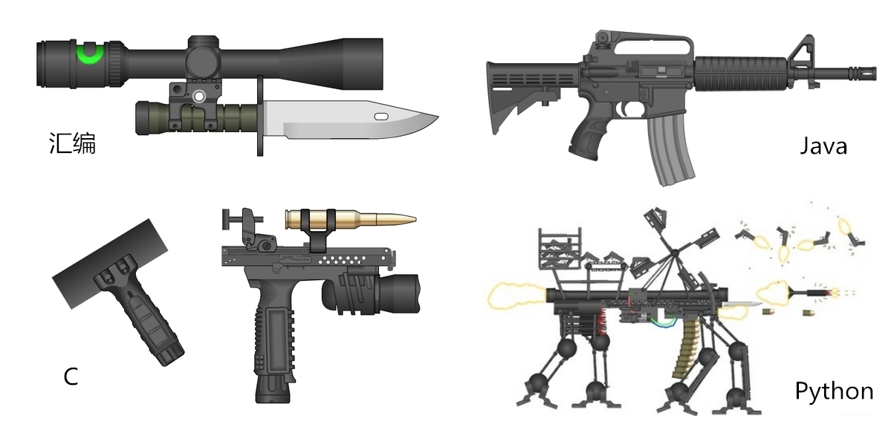
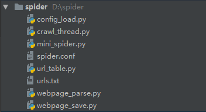
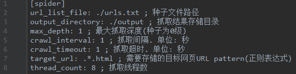
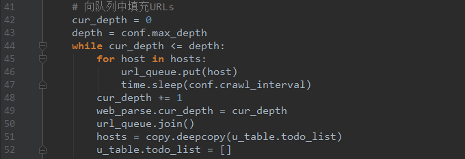
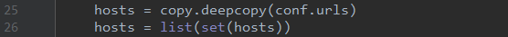
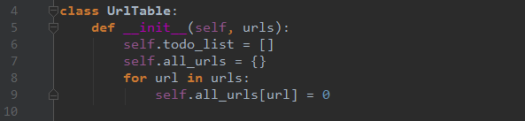
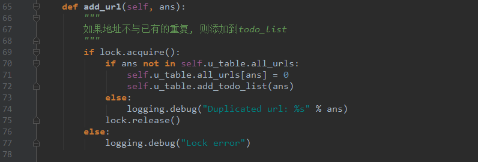
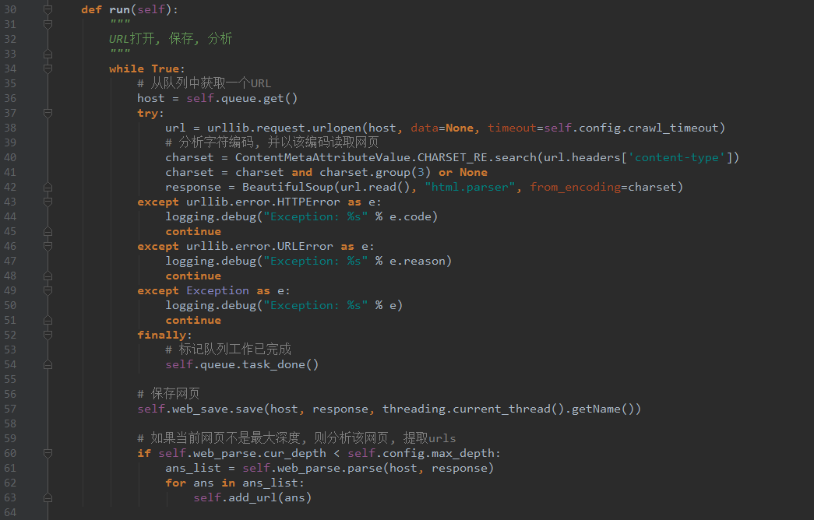
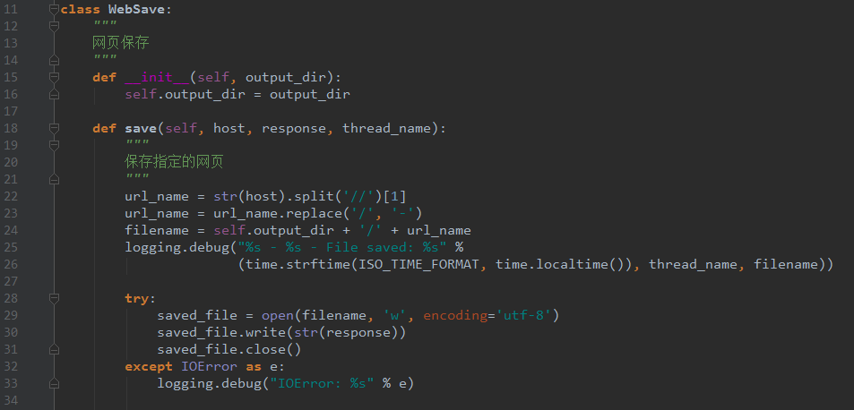

手把手教你写网络爬虫（2）：迷你爬虫架构
原文出处： 拓海
介绍
大家好！回顾上一期，我们在介绍了爬虫的基本概念之后，就利用各种工具横冲直撞的完成了一个小爬虫，目的就是猛、糙、快，方便初学者上手，建立信心。对于有一定基础的读者，请不要着急，以后我们会学习主流的开源框架，打造出一个强大专业的爬虫系统！不过在此之前，要继续打好基础，本期我们先介绍爬虫的种类，然后选取最典型的通用网络爬虫，为其设计一个迷你框架。有了自己对框架的思考后，再学习复杂的开源框架就有头绪了。
今天我们会把更多的时间用在思考上，而不是一根筋的coding。用80%的时间思考，20%的时间敲键盘，这样更有利于进步。
语言&环境
语言：带足弹药，继续用Python开路！

threading：threading库可以在单独的线程中执行任何的在Python中可以调用的对象。Python 2.x中的thread模块已被废弃，用户可以使用threading模块代替。在Python 3中不能再使用thread模块。为了兼容性，Python 3将thread重命名为_thread。
queue：queue模块中提供了同步的、线程安全的队列类，包括FIFO（先入先出)队列Queue，LIFO（后入先出）队列LifoQueue，和优先级队列PriorityQueue。这些队列都实现了锁原语，能够在多线程中直接使用。可以使用队列来实现线程间的同步。
re：Python 自1.5版本起增加了re模块，它提供Perl风格的正则表达式模式。re模块使 Python语言拥有全部的正则表达式功能。
argparse：Python用于解析命令行参数和选项的标准模块，用于代替已经过时的optparse模块。argparse模块的作用是用于解析命令行参数。
configparser：读取配置文件的模块。
爬虫的种类

网络爬虫按照系统结构和实现技术，大致可以分为以下几种类型：通用网络爬虫（General Purpose Web Crawler）、聚焦网络爬虫（Focused Web Crawler）、增量式网络爬虫（Incremental Web Crawler）、深层网络爬虫（Deep Web Crawler）。实际的网络爬虫系统通常是几种爬虫技术相结合实现的。
通用网络爬虫
通用网络爬虫又称全网爬虫（Scalable Web Crawler），爬取对象从一些种子 URL 扩充到整个 Web。主要为门户站点搜索引擎和大型 Web 服务提供商采集数据。
通用网络爬虫的结构大致可以分为页面爬取模块 、页面分析模块、链接过滤模块、页面存储模块、URL 队列、初始 URL 集合几个部分。为提高工作效率，通用网络爬虫会采取一定的爬取策略。 常用的爬取策略有：深度优先策略、广度优先策略。
1) 深度优先策略（DFS）：其基本方法是按照深度由低到高的顺序，依次访问下一级网页链接，直到不能再深入为止。
2) 广度优先策略（BFS）：此策略按照网页内容目录层次深浅来爬取页面，处于较浅目录层次的页面首先被爬取。 当同一层次中的页面爬取完毕后，爬虫再深入下一层继续爬取。
聚焦网络爬虫
聚焦网络爬虫（Focused Crawler），又称主题网络爬虫（Topical Crawler），是指选择性地爬取那些与预先定义好的主题相关页面的网络爬虫。 和通用网络爬虫相比，聚焦爬虫只需要爬取与主题相关的页面，极大地节省了硬件和网络资源，保存的页面也由于数量少而更新快，还可以很好地满足一些特定人群对特定领域信息的需求。我们之前爬的歌单就属于这一种。
增量式网络爬虫
增量式网络爬虫（Incremental Web Crawler）是 指 对 已 下 载 网 页 采 取 增 量式更新和只爬取新产生的或者已经发生变化网页的爬虫，它能够在一定程度上保证所爬取的页面是尽可能新的页面。 和周期性爬取和刷新页面的网络爬虫相比，增量式爬虫只会在需要的时候爬取新产生或发生更新的页面 ，并不重新下载没有发生变化的页面，可有效减少数据下载量，及时更新已爬取的网页，减小时间和空间上的耗费，但是增加了爬取算法的复杂度和实现难度。现在比较火的舆情爬虫一般都是增量式网络爬虫。
深网爬虫
Web 页面按存在方式可以分为表层网页（Surface Web）和深层网页（Deep Web，也称 Invisible Web Pages 或 Hidden Web）。 表层网页是指传统搜索引擎可以索引的页面，以超链接可以到达的静态网页为主构成的 Web 页面。Deep Web 是那些大部分内容不能通过静态链接获取的、隐藏在搜索表单后的，只有用户提交一些关键词才能获得的 Web 页面。例如那些用户注册后内容才可见的网页就属于 Deep Web。
一个迷你框架
下面以比较典型的通用爬虫为例，分析其工程要点，设计并实现一个迷你框架。架构图如下：

代码结构：

config_load.py 配置文件加载
crawl_thread.py 爬取线程
mini_spider.py 主线程
spider.conf 配置文件
url_table.py url队列、url表
urls.txt 种子url集合
webpage_parse.py 网页分析
webpage_save.py 网页存储
看看配置文件里有什么内容：
spider.conf

Step 1. 采用BFS还是DFS？
理论上，这两个算法都能够在大致相同的时间里爬取整个互联网上的内容。但显然各个网站最重要的网页应该是它的首页。在极端情况下，如果只能下载非常有限的网页，那么应该下载的所有网站的首页，如果把爬虫再扩大些，应该爬取从首页直接链接的网页，因为这些网页是网站设计者自己认为相当重要的网页。在这个前提下，显然BFS明显优于DFS。事实上在搜索引擎的爬虫里，主要采用的就是BFS。我们的框架采取这种策略。
抓取深度可以通过配置文件中的max_depth设置，只要没到达指定深度，程序就会不停的将解析出的url放入队列中：
mini_spider.py

Step 2. 初始URL集合、URL队列
我们来看看通用爬虫如何下载整个互联网。假设从一家门户网站的首页出发，先下载这个网页（深度=0），然后通过分析这个网页，可以找到页面里的所有超链接，也就等于知道了这家门户网站首页所直接连接的全部网页，诸如京东理财、京东白条，京东众筹等（深度=1）。接下来访问、下载并分析京东理财等网页，又能找到其他相连的网页（深度=2）。让计算机不停的做下去，就能下载整个网站。
在这个过程中，我们需要一个“初始URL集合”保存门户的首页，还需要一个“URL队列”保存分析网页得到的超链接。
mini_spider.py

url_table.py

Step 3. 记录哪些网页已经下载过的小本本——URL表。
在互联网上，一个网页可能被多个网页中的超链接所指向。这样在遍历互联网这张图的时候，这个网页可能被多次访问到。为了防止一个网页被下载和解析多次，需要一个URL表记录哪些网页已经下载过。再遇到这个网页的时候，我们就可以跳过它。
crawl_thread.py

Step 4. 多个抓取线程
为了提升爬虫性能，需要多个抓取线程，从URL队列获取链接进行处理。多线程并没什么毛病，但Python的多线程可能会引起很多人的质疑，这源于Python设计之初的考虑：GIL。GIL的全称是Global Interpreter Lock(全局解释器锁)，某个线程想要执行，必须先拿到GIL，并且在一个Python进程中，GIL只有一个。结果就是Python里一个进程永远只能同时执行一个线程，这就是为什么在多核CPU上，Python的多线程效率并不高。那么我们为什么还要用Python多线程呢？
CPU密集型代码(各种循环处理、编解码等等)，在这种情况下，由于计算工作多，ticks计数很快就会达到阈值，然后触发GIL的释放与再竞争（多个线程来回切换当然是需要消耗资源的），Python下的多线程对CPU密集型代码并不友好。
IO密集型代码(文件处理、网络爬虫等)，多线程能够有效提升效率(单线程下有IO操作会进行IO等待，造成不必要的时间浪费，而开启多线程能在线程A等待时，自动切换到线程B，可以不浪费CPU的资源，从而能提升程序执行效率)。Python的多线程对IO密集型代码比较友好。
所以，对于IO密集的爬虫程序，使用Python多线程是没问题的。
crawl_thread.py

Step 5. 页面分析模块
从网页中解析出URLs或者其他有用的数据。这个是上期重点介绍的，可以参考之前的代码。
Step 6. 页面存储模块
保存页面的模块，目前将文件保存为文件，以后可以扩展出多种存储方式，如mysql，mongodb，hbase等等。
webpage_save.py

写到这里，整个框架已经清晰的呈现在大家眼前了，千万不要小看它，不管多么复杂的框架都是在这些基本要素上扩展出来的。
下一步
基础知识的学习暂时告一段落，希望能够帮助大家打下一定的基础。下期开始为大家介绍强大成熟的爬虫框架Scrapy，它提供了很多强大的特性来使得爬取更为简单高效，更多精彩，敬请期待！
1 赞 4 收藏 评论